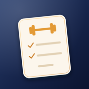

筋トレシピ
ジムでの筋トレの種目・セット・重さを記録し、休憩時間をはかるアプリです。
- 週に通える日数や目的などの質問に答えると、週の予定と、種目・セット数・回数の目安を組み立てます
- 種目ごとのフォームのポイントと、握り方の図を表示します
- 休憩タイマーは、アプリを閉じていても終わりを通知でお知らせします
- 記録はすべてお使いの端末の中に保存し、外部のサーバーには送信しません
持病やけががある方は、医師に相談のうえ、ご自身の判断で行ってください。アプリの提案は一般的な情報で、診断や治療の代わりにはなりません。